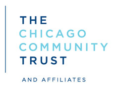

<div id="credit-bar">
  <div id="credit-bar-inner" class="container">
      <div id="partners-container" class="credit-container">
          <h2>A project by</h2>

          <ul id="partners" class="credit-group">
              <li class="credit-item">
                  <a href="http://www.smartchicagocollaborative.org/" title="Smart Chicago Collaborative"></a>
              </li>
              <li class="credit-item"><a href="http://chicagojustice.org/"></a></li>
              <li class="credit-item"><a href="http://freegeekchicago.org/" title="FreeGeek Chicago"></a></li> 
          </ul>
      </div>
      <div id="foundations-container" class="credit-container">
          <h2>With support from</h2>
          <ul id="foundations" class="credit-group">
              <li class="credit-item"><a href="http://www.cct.org/" title="Chicago Community Trust"></a></li>
              <li class="credit-item"><a href="http://www.knightfoundation.org/" title="Knight Foundation"></a></li>
          </ul>
      </div>
  </div>
  <a style="position: absolute; top: 0; right: 0; border: 0;" href="https://github.com/sc3/cook-convictions"></a>
</div>
